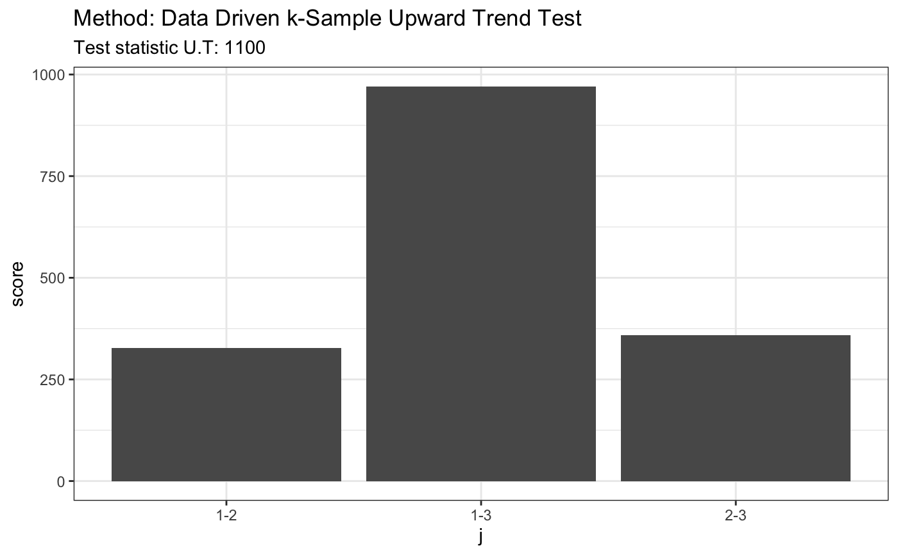
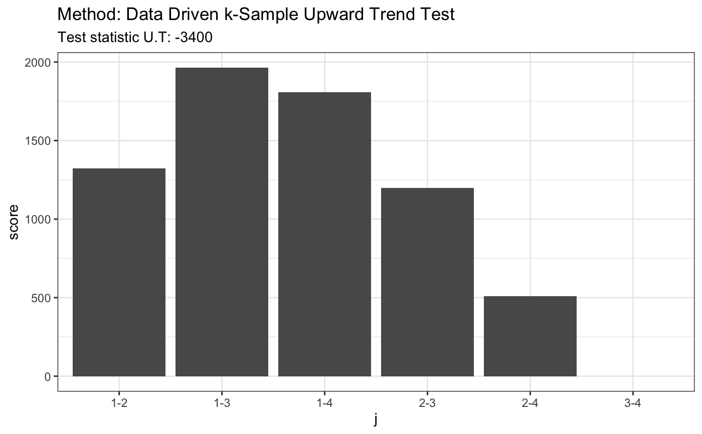

R/ddst.upwardtrend.test.R
ddst.upwardtrend.test.RdPerforms data driven smooth test for upward trend in k-sample problem. Suppose that we have random samples from k distributions F_i where i = 1, ..., k. The null hypothesis is that there is lack of trend, i.e. F_1 >= ... >= F_k and F_i != F_j for some i and j. The alternative is that there is a trend i.e. F_1 >= ... >= F_k and F_i != F_j for some i and j. This test is implemented as a special case of an umbrella test.
ddst.upwardtrend.test( x, r.N = rep(4, length(x) - 1), alpha = 0.05, t.p, t.n, nr = 1e+05, compute.cv = TRUE )
| x | a list of k (non-empty) numeric vectors of data |
|---|---|
| r.N | a (k-1)-dimensional vector specifying the levels of complexity of the grids considered, only for advanced users |
| alpha | a significance level |
| t.p | an alpha-dependent (k-1)-dimensional vector of the tunning parameters in the penalties in the model selection rules T.o |
| t.n | an alpha-dependent (k-1)-dimensional vector of the tunning parameters in the penalties in the model selection rules T.tilde |
| nr | an integer specifying the number of runs for a p-value and a critical value computation if any |
| compute.cv | a logical value indicating whether to compute a critical value corresponding to the significance level alpha or not |
| t | an alpha-dependent tunning parameter in the penalty in the model selection rule |
An automatic test for the umbrella alternatives. Wylupek (2016) https://onlinelibrary.wiley.com/doi/abs/10.1111/sjos.12231
set.seed(7) # H0 is true x = runif(80) y = runif(80) + 0.2 z = runif(80) + 0.4 t <- ddst.upwardtrend.test(list(x, y, z), t.p = 2.2, t.n = 2.2) t#> #> Data Driven k-Sample Upward Trend Test #> #> data: listxyz, t.p: 2.2, t.n: 2.2 #> U.T = 1105, p = 3 #>plot(t)# H0 is false # known fixed alternative x1 = rnorm(80) x2 = rnorm(80) + 2 x3 = rnorm(80) + 4 x4 = rnorm(80) + 3 t <- ddst.upwardtrend.test(list(x1, x2, x3, x4), t.p = 2.2, t.n = 2.2) t#> #> Data Driven k-Sample Upward Trend Test #> #> data: listx1x2x3x4, t.p: 2.2, t.n: 2.2 #> U.T = -3401.6, p = 4 #>plot(t)